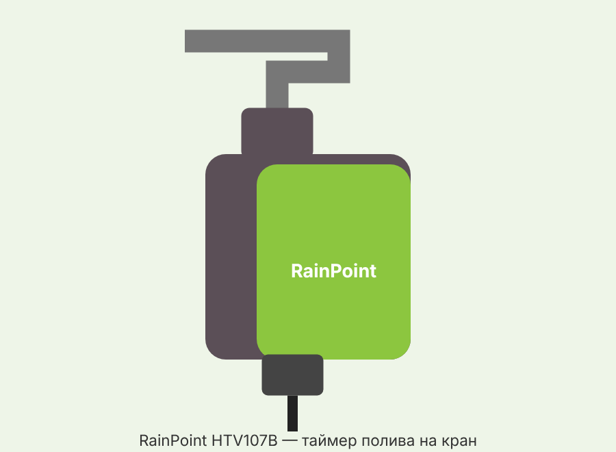

• Таймер ставится на уличный кран и по расписанию открывает/закрывает воду для шланга или капельной системы. • Сам таймер связан по Bluetooth 5.0; Wi-Fi и управление из приложения — только через хаб HWG009WB (в этот комплект не входит, покупается отдельно; в инструкции хаб описан вместе с таймером). • Приложение — RainPoint Home. Поддержка голосовых ассистентов Google Assistant и Amazon Alexa. • До 6 программ полива, режимы: обычный, интервальный, Cycle&Soak.
• Таймер HTV107B (вариант «только таймер»). • Входной фильтр (в инструкции указан как часть таймера). • Инструкция. • Хаб HWG009WB — отдельно; батарейки 4×AA — не входят.
• Кнопка таймера — короткое нажатие открывает/закрывает клапан (слышен щелчок); удержание — режим сопряжения/сброс. • Светодиодный индикатор (белый/красный/синий). • Батарейный отсек — 4×AA. • Вход с фильтром: резьба 1" или 3/4"; выход: резьба 3/4". • Включение: белый и красный горят вместе 1 с. • Самотест/сопряжение: красный 2 с → красный+синий 1 с → красный быстро мигает (ждёт сопряжения); синий горит 2 с — сопряжено. • Обычный полив: белый вспыхивает 1 раз в 4 с. • Интервальный режим: белый вспыхивает 2 раза в 4 с. • Есть программа, но время не синхронизировано: красный вспыхивает 1 раз в 4 с. • Батарейки садятся: красный вспыхивает 1 раз в 3 с.
• 4 щелочные батарейки AA (не входят в комплект). Солнечной панели и адаптера нет. • Как открыть отсек — по инструкции не указано; сказано лишь вставить батарейки по полярности и надёжно закрыть отсек. • Только щелочные, не смешивать старые с новыми и разные типы. • Разряженные сразу вынимать; на время хранения батарейки извлекать.
• Включается в розетку в помещении, рядом с роутером и в пределах досягаемости таймера. • Только Wi-Fi 2.4 ГГц (5 ГГц не поддерживается). • Связь хаб–таймер по Bluetooth: до 60 м на открытом месте; стены, металлические ворота, кусты сокращают дальность. • Режим сопряжения: удерживать кнопку хаба 5 с, пока синий не замигает быстро (2 раза/с). • Индикатор: быстрое синее мигание — Smart-сопряжение; быстрое, затем медленное — AP-режим. • Сброс хаба: вынуть из розетки, подождать 10 с, включить и сопрячь заново. • Сколько таймеров тянет один хаб — по инструкции не указано.
• Установите RainPoint Home, зарегистрируйтесь. • Сначала добавьте хаб HWG009WB: включите его, удерживайте кнопку 5 с до быстрого синего мигания, выберите сеть 2.4 ГГц и введите пароль. • Затем на странице хаба добавьте таймер HTV107B: вставьте батарейки, удерживайте кнопку таймера, пока красный не замигает быстро. • При успехе синий индикатор таймера горит 2 с. • При настройке держите таймер рядом с хабом и роутером.
• Закройте кран, обмотайте резьбу крана тефлоновой лентой. • Вставьте фильтр во вход таймера горизонтально (плоско) — иначе будет течь. • Накрутите таймер строго вертикально (чтобы дождевая вода не затекала внутрь) — только рукой, без инструментов, не перекосив резьбу. • Обмотайте лентой выходную резьбу и подсоедините шланг. • Проверка при закрытом кране: нажмите кнопку — щелчок, клапан открыт; ещё раз — закрыт. • Затем приоткройте кран и убедитесь, что вода идёт и перекрывается. • После программирования откройте кран полностью — таймер управляет водой сам.
• Экран «Plan» → «+» → выбрать режим. • Normal (обычный): время старта, длительность, периодичность, дата начала действия. • Interval (интервальный, для туманообразования/порционного полива): время работы клапана, пауза, время старта, общая длительность, периодичность, дата начала. • Cycle&Soak (полив–впитывание): длительность цикла и впитывания, общая длительность, периодичность, дата начала. • Периодичность: каждый день, нечётные/чётные числа, через N дней, выбранные дни. • Сохранить — в правом верхнем углу; удалить — в деталях программы. • До 6 программ; длительность полива от 1 минуты до 12 часов. • Сезонная корректировка (Seasonal Adjustment): по месяцам 10–200 % от заданного времени. • Параметры интервала и длительность ручного полива по умолчанию — в «Basic Settings».
• Ручной полив: на главной «Manual» → режим и длительность; или кнопкой на таймере. • Если во время ручного полива наступает время программы — запуск программы пропускается. • Rain Delay (пропуск): на экране «Plan» — 24, 48 или 72 часа; затем полив продолжится по следующей программе. Отключается там же. • Сценарии (вкладка «Smart»): условие + действие. Пример: если в вашем городе сильный дождь → «All Plans Delayed» на N дней. Город указывайте точно — погода берётся по нему. • Уведомления («Me» → «Event»): онлайн/офлайн, журнал поливов, предупреждение о жаре. • Работают ли программы без связи с хабом — по инструкции не указано (есть индикация «время не синхронизировано»).
• Выньте батарейки, подождите 10 с, вставьте обратно. • Удерживайте кнопку, пока индикатор не замигает быстро (2 раза/с), и сопрягите заново.
• Клапан не открывается/не закрывается → замените батарейки; промойте входной фильтр; при плохой связи подождите и повторите. • Таймер не подключается → проверьте Wi-Fi; поднесите таймер к хабу; удерживайте кнопку до быстрого красного мигания или удалите и добавьте заново. • Хаб не подключается → сеть должна быть 2.4 ГГц; проверьте пароль; включите режим сопряжения (быстрое синее мигание). • Программа не сработала → фильтр засорён; включён Rain Delay; задан сценарий «стоп при дожде»; батарейки сели (режим защиты); не заданы параметры программы. • Течёт на входе → нет фильтра или он стоит не горизонтально; кран не 3/4"; добавьте тефлоновую ленту. • Слабый напор → промойте/замените фильтр; проверьте, не перекошена ли резьба; при низком давлении в сети — повысительный насос.
• Только холодная вода, только на улице; под навесом служит дольше. • Таймер всегда вертикально, фильтр держать чистым. • Рабочая температура 3–50 °C; при угрозе заморозков снять, слить воду, вынуть батарейки и хранить в помещении. • Не погружать в воду.
• Вход: резьба 1" или 3/4"; выход: 3/4". • Рабочее давление: 0,5–8 бар. • Длительность полива: 1 мин – 12 ч; до 6 программ. • Режимы: Normal, Interval, Cycle&Soak. • Связь: Bluetooth 5.0 до 60 м; Wi-Fi 2.4 ГГц через хаб HWG009WB. • Защита: IP54; рабочая температура 3–50 °C. • Питание: 4×AA щелочные. • Гарантия: 1 год; для активации — письмо на service@rainpointonline.com с номером заказа.